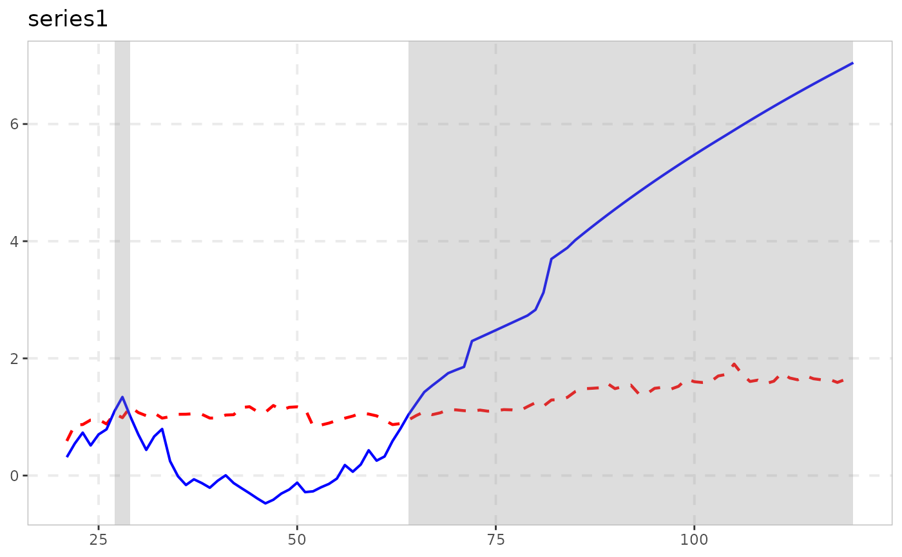

radf_sbz computes the WLS (kernel-volatility-weighted) recursive
sup-ADF statistic of Harvey, Leybourne & Zu (2019) – supBZ in
their own notation – via wls_dfstat_grid() (internal),
returning the same shape radf itself does
(adf/sadf/gsadf scalars plus the full
badf/bsadf recursive paths), so it carries the
radf_obj class and the full summary()/
datestamp/tidy/autoplot pipeline works,
paired with radf_sbz_cv.
Usage
radf_sbz(data, minw = NULL, kernel = c("gaussian", "uniform"), h = NULL)Arguments
- data
A univariate or multivariate numeric time series object, a numeric vector or matrix, or a data.frame. A column may have leading and/or trailing
NAvalues (an uneven/unbalanced panel where series enter or exit the sample at different times) – those periods are filled withNAinbadf/bsadfand excluded from that series'adf/sadf/gsadf. InteriorNAvalues (a gap in the middle of a series) are not supported. When any series is padded this way, the panel statistic (bsadf_panel/gsadf_panel) is not available and is returned asNA, with a warning.- minw
A positive integer. The minimum window size (default = \((0.01 + 1.8/\sqrt(T))T\), where T denotes the sample size).
- kernel
Kernel for the spot-volatility estimator (eq. 6 of Harvey, Leybourne & Zu 2019),
"gaussian"(default, as in the paper) or"uniform".- h
Bandwidth for the spot-volatility estimator. Default: leave-one-out cross-validation over the paper's own search range.
Value
An object of class radf_sbz_obj/radf_obj: a list
with adf, sadf, gsadf (one value per series) and
badf, bsadf (matrices, one column per series).
Details
Unlike the bundled radf_sbz_union (which combines this with
the classic supDF statistic into a bootstrap-calibrated union
test), supBZ alone needs no bootstrap to be defined – only
to be tested – so it splits into a statistic and a critical-value
function the way most of exuber does.
Note
Needs radf_sbz_cv for critical values, not
radf_wb_cv or radf_mc_cv – supBZ's
own null distribution depends on the WLS weighting, so it needs its own
(data-dependent, wild-bootstrap) critical value function, same reasoning
as radf()/radf_wb_cv.
![[Experimental]](figures/lifecycle-experimental.svg)
References
Harvey, D. I., Leybourne, S. J., & Zu, Y. (2019). Testing explosive bubbles with time-varying volatility. Econometric Reviews, 38(10), 1131-1151.
See also
radf_sbz_cv for critical values, and
radf_sbz_union for the paper's own headline bootstrap
union-of-rejections test against the classic supDF statistic.
Examples
# \donttest{
res <- radf_sbz(sim_data, minw = 20)
print(res)
#>
#> ── radf (minw = 20, lag = 0) ───────────────────────────────────────────────────
#>
#> id adf sadf gsadf
#> psy1 -1.2166 0.2802 1.047
#> psy2 -1.0665 1.5349 1.563
#> evans -2.9534 -1.0012 1.705
#> div 0.6601 2.2607 2.261
#> blan -4.1432 1.4008 2.381
#>
#> [1] gsadf_panel
#> <0 rows> (or 0-length row.names)
#>
cv <- radf_sbz_cv(sim_data, minw = 20, nboot = 200)
summary(res, cv = cv)
#>
#> ── Summary (minw = 20, lag = 0) ────────── Wild Bootstrap (SBZ) (nboot = 200) ──
#>
#> psy1 :
#> # A tibble: 3 × 5
#> stat tstat `90` `95` `99`
#> <fct> <dbl> <dbl> <dbl> <dbl>
#> 1 adf -1.22 0.623 0.826 1.18
#> 2 sadf 0.280 1.62 1.97 2.54
#> 3 gsadf 1.05 1.96 2.84 3.87
#>
#> psy2 :
#> # A tibble: 3 × 5
#> stat tstat `90` `95` `99`
#> <fct> <dbl> <dbl> <dbl> <dbl>
#> 1 adf -1.07 0.476 0.615 0.833
#> 2 sadf 1.53 2.13 2.65 4.39
#> 3 gsadf 1.56 2.52 3.11 5.58
#>
#> evans :
#> # A tibble: 3 × 5
#> stat tstat `90` `95` `99`
#> <fct> <dbl> <dbl> <dbl> <dbl>
#> 1 adf -2.95 0.589 0.806 0.993
#> 2 sadf -1.00 4.04 5.44 7.43
#> 3 gsadf 1.70 4.65 5.75 8.23
#>
#> div :
#> # A tibble: 3 × 5
#> stat tstat `90` `95` `99`
#> <fct> <dbl> <dbl> <dbl> <dbl>
#> 1 adf 0.660 0.922 1.24 1.94
#> 2 sadf 2.26 2.07 2.37 3.13
#> 3 gsadf 2.26 2.39 2.75 3.31
#>
#> blan :
#> # A tibble: 3 × 5
#> stat tstat `90` `95` `99`
#> <fct> <dbl> <dbl> <dbl> <dbl>
#> 1 adf -4.14 0.609 1.09 1.39
#> 2 sadf 1.40 2.44 3.51 7.38
#> 3 gsadf 2.38 3.28 4.43 7.57
#>
tidy(res, cv = cv)
#> # A tibble: 5 × 4
#> id adf sadf gsadf
#> <fct> <dbl> <dbl> <dbl>
#> 1 psy1 -1.22 0.280 1.05
#> 2 psy2 -1.07 1.53 1.56
#> 3 evans -2.95 -1.00 1.70
#> 4 div 0.660 2.26 2.26
#> 5 blan -4.14 1.40 2.38
# datestamp()/autoplot() need at least one rejection; supBZ's
# kernel-volatility weighting trades away enough power that none of
# sim_data's five series clear it, so use a series built to reject:
set.seed(7)
n <- 120; te <- 70
y <- cumsum(rnorm(n))
y[(te + 1):n] <- y[te] * 1.15 ^ seq_len(n - te)
res2 <- radf_sbz(y, minw = 20)
cv2 <- radf_sbz_cv(y, minw = 20, nboot = 100, seed = 1)
datestamp(res2, cv = cv2)
#>
#> ── Datestamp (min_duration = 0) ──────────────────────── Wild Bootstrap (SBZ) ──
#>
#> series1 :
#> Start Peak End Duration Signal Ongoing
#> 1 27 28 29 2 positive FALSE
#> 2 64 120 120 57 positive TRUE
#>
autoplot(res2, cv = cv2)

# }